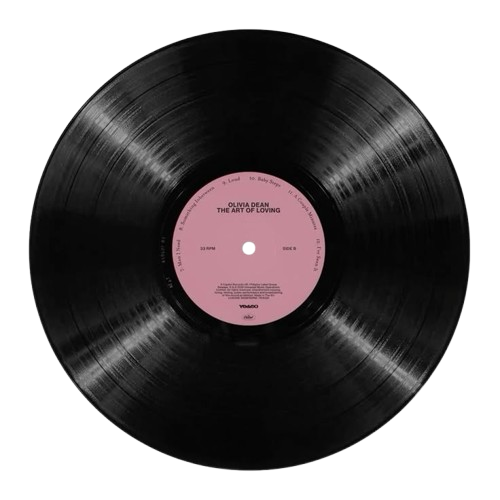

Em destaque
Todos os artistas
Descubra os artistas mais populares e seus trabalhos mais reconhecidos. Clique em um card para ver os detalhes e os álbuns.

Acervo MusicalDescubra os artistas mais populares e seus trabalhos mais reconhecidos. Clique em um card para ver os detalhes e os álbuns.